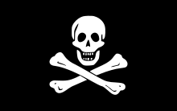

Пираты в древнее время
-
Слово «пират» происходит от греческого «разбойник».
-
Пиратство возникло еще в древние времена тогда же, когда возникло и мореплавание.
-
Первые известные упоминания о пиратах относятся к античности.
-
Пираты грабили суда и захватывали в плен торговцев, моряков и знатных людей. Так Юлий Цезарь был в плену у пиратов.

Золотой век пиратства
.jpeg)
Очередной бум пиратства случился в XVI веке, что было связано с географическими открытиями и развитием торговли и мореплавания.
Период с 1650 по 1720 годы известен как «Золотой век пиратства». Множество ценных грузов, такие как золото, серебро, различные травы и специи проходили через Мексиканский залив и Карибское море прямиков в Европу, что привлекало пиратов.
Виды пиратов
- Берберские пираты грабили у берегов Северной Африки
- Ликеделеры грабили на Балтийском море
- Греческих пиратов – клефты, нападали на турецкие суда.
- Вокоу - японские пираты, нападали на корабли из стран южной и восточной Азии.
- Каперы и корсары отличались от обычных пиратов, главным образом, наличие особого «удостоверения», позволяющее грабить корабли другого государства
- Во Франции, Англии и Нидерландах корсаров называли флибустьерами.

как закончился золотой век пиратсва
В 1690 году мощное
землетрясение разрушает
крупнейший пиратский порт Ройал,
главное на то время
В 1713 году война заканчивается,
многие моряки остались без работы.
Пираты продолжили
грабить всех подряд только уже
без лицензии.
На Карибах началось самое жестокое десятилетие
Лаффит был последним известным пиратом в Карибском море.
Он был схвачен и казнен испанцами в 1732 году.

флаг черной бороды

флаг Черного Барта

Флаг «Ситцевого Джека»
Флаг Эдварда Инглэнда

Флаг Джентльмена пиратов
Пираты в литературе
Основным источником для литераторов послужили пиратские мемуары.
Сочинение Александра Оливье Эксквемелина «Пираты Америки», изданное в 1678 г.
«Всеобщая история пиратов» Чарльза Джонсона, также была главным источником биографий многих известных пиратов
«Остров сокровищ» Р. Л. Стивенсона (1883) считается самым влиятельным произведением пиратской фантастики.
Даниэль Дефо не раз обращался к «пиратской» теме: «Робинзон Крузо» и «Жизнь и пиратские приключения капитана Сингльтона».
В XX в. на смену образу кровожадного убийцы пришел новый образ пирата: образ настоящего героя, сражающегося за правое дело, благородного и бесстрашного. Этот образ появился благодаря «Одиссеи капитана Блада» Рафаэля Сабатини.
Про пиратов снимается много фильмов: например «Пираты Карибского моря»

Заключение
- Пираты сыграли важную роль в войнах между государствами Европы
- Некоторые пираты совершали морские открытия.
- Пиратство оказало влияние на международное морское право, включая правила ведения войны на море и правила обращения с пленными.
- Образ пирата оказал огромное влияние на культуру народов.
- Образ пирата нашел свое отражение в произведениях литературы, живописи кинематографа, видеоигр.
- Пиратство - это не просто рассказы о приключениях и сокровищах; это сложная и многогранная часть нашей истории. Понимание истинного лика пиратства помогает нам лучше понять не только прошлое, но и наше собственное время.
Генри Морган

Генри Морган (1635-1688) родился он в зажиточной семье английского землевладельца.
Он нанялся на один из кораблей юнгой, но вскоре был продан в рабство на Барбадосе.
Ему удалось перебраться на Ямайку, где Морган присоединился к шайке пиратов.
Несколько удачных походов позволили ему с товарищами приобрести судно.
Моргана выбрали капитаном и уже через несколько лет под его началом было 35 кораблей.
С таким флотом ему удалось за день захватить Панаму и сжечь весь город.
За оказанные Британии услуги в борьбе против Испании Генри Морган получил должность вице-губернатора Ямайки.
Умер знаменитый корсар в возрасте 53 лет от цирроза печени.
Бартоломью Робертс
Бартоломью Робертс, также известен как Черный Барт (17 мая 1682 — 17 февраля 1722) — валлийский пират, который за два с половиной года ограбил около 400 кораблей в окрестностях Барбадоса и Мартиники.
Стал капитаном после того, как попал в рабство пиратов.
Его называли «самым удачливым пиратом карибского моря».
Он всегда был хорошо одет, имел изысканные манеры, ненавидел пьянство и азартные игры, хорошо обходился с экипажем захваченных им кораблей.
Был убит пушечной картечью во время боя с британским военным кораблём.

черная борода

Чёрная Борода или Эдвард Тич (1680 — 22 ноября 1718) — английский пират, промышлявший в Карибском море в 1716–1718 годах.
Проницательный и расчётливый капитан избегал использования силы, полагаясь на свой грозный образ.
Ему нравилось вселять ужас в своих врагов.
Во время битвы Тич вплетал в бороду зажигательные фитили и в клубах дыма, как сатана из ада, врывался в ряды противника.
Из-за необычной внешности и эксцентричного поведения, история сделала его одним из самых известных пиратов, несмотря на то, что его «карьера» была довольно короткой, а успешность и масштабы деятельности — гораздо меньшими, по сравнению с другими пиратами.
Фрэнсис Дрейк
Фрэнсис Дрейк — один из самых известных пиратов в мире.
Собственно, он был не пиратом, а корсаром, действовавшим на морях и океанах против вражеских кораблей по специальному разрешению королевы Елизаветы.
Опустошая побережья Центральной и Южной Америки, он несметно разбогател.
Дрейк совершил немало великих деяний: открыл пролив, который назвал в свою честь, под его командованием британский флот разгромил Великую Армаду.
С тех самых пор один из кораблей английского военно-морского флота носит имя знаменитого мореплавателя и корсара Фрэнсиса Дрейка.

Энн Бонни

Энн Бонни, одна из немногих женщин, которые преуспели в пиратстве.
Выросла она в богатом особняке и получила хорошее образование.
Однако когда отец решил выдать ее замуж, она сбежала из дому с простым моряком.
Спустя некоторое время Энн Бонни познакомилась с пиратом Джеком Рэкхемом и он взял ее на свой корабль.
По рассказам очевидцев, в смелости и умении драться Бонни не уступала мужчинам-пиратам.
Пиратский кодекс.
Несмотря на значительную степень личной свободы, в пиратском коллективе не было никакой анархии. В целом, можно сказать, что пиратский кодекс во многом походил на свод правил, обычных для торговых судов и военных кораблей. Каждый пиратский экипаж определял собственный свод правил. Эти правила обычно записывались, и каждый член экипажа соглашался их исполнять. Кодекс определялся перед выходом в море. Если на борту торгового судна происходил мятеж, то первое, что делали восставшие матросы, определяли свод законов.
В конце XVII века буканьеры пользовались письменной хартией (chartc-partie), в которой определялись условия службы, выплаты в случае ранения или смерти, доля трофеев. Такая хартия рассматривалась как официальный документ, который в случае конфликтов рассматривался в ямайкском суде. Когда в конце XVII века буканьеры в большинстве своем превратились в пиратов, они сохранили традицию составления хартии, хотя она никакого юридического веса уже не имела, но признавалась в рамках экипажа. До нас дошло несколько подобных хартий. Например, хартия, составленная Бартоломью Робертсом, носит прямо-таки драконовский характер.
Все эти документы представляют собой ценнейшее свидетельство эпохи, проливающее свет на пиратскую жизнь. Будучи однажды утверждена командой, хартия неукоснительно соблюдалась. Капитану корабля давалась практически неограниченная власть.
Капитан обычно выбирался всей командой, чаще всего простым голосованием поднятой рукой. Если капитан переставал устраивать команду, таким же голосованием его легко могли сместить с занимаемой должности. Власть капитана была огромной. Он мог убить любого матроса, отказавшегося выполнять приказы, при этом решение принималось им лично, без какой-либо судебной процедуры.
«Вчерашний день прошёл, сегодняшний - наш, наступит ли завтрашний - неизвестно»
- Каждый Настоящий Пират должен гордиться своим громким именем.
- Для пирата существует лишь один закон – Пиратский кодекс чести.
- Для пирата существует лишь одна семья – Пиратское братство.
- Для пирата существует лишь один дом – пиратский корабль.
- Для пирата существует лишь один образец подражания – его великие предшественники.
- Жизнь пирата – непрестанная цепь сражений.
- Самые страшные преступления для настоящего пирата – это предательство и трусость.
- Пират должен быть всегда готов рисковать своей жизнью.
- Каждый пират должен быть отчаянным и смелым, трусость в бою карается.
- Каждый пират обязан подчиняться вышестоящим по рангу.
- Пистолеты, сабли и остальное оружие должны содержаться в чистоте и полной готовности.
- Пирату запрещается использовать на корабле нецензурные выражения.
- Для выражения своих мыслей и чувств пират может использовать слова из пиратского жаргона, разрешённые на корабле.
- Если любой из членов команды будет уличён в воровстве или нечестной игре, он должен быть наказан.
- Женщинам разрешено становиться пиратками только в том случае, если они не уступают мужчинам в следующих качествах: решительности, смелости и силе воли.
- Когда пират проходит определённое количество сражений, приобретает необходимый опыт и навыки, он получает повышение в звании, согласно Пиратскому рангу.
- Чёрная метка – знак наказания, клеймо на репутации пирата за несоблюдение кодекса.
Пиратские ранги.
Мужчины:
Капитан.
Капитаном избирается наиболее опытный и смелый член команды. Он должен быть уважаем остальной командой и обладать жёстким и твёрдым характером. Капитан нигде не имеет право быть последним. Единственное, что не считается проявлением трусости – если капитан во время рукопашной остаётся на своем мостике, а не лезет впереди абордажной команды. Если капитан проявляет трусость или жестокость по отношению к своей команде, пираты могут поднять бунт и выбросить капитана за борт, или в лучшем случае, высадить на необитаемый остров. Если же команда считает, что капитан плохо справляется со своими обязанностями, он становится рядовым пиратом, а его место занимает другой, выбранный всей командой моряк.
Квартмейстер
Квартмейстер несёт ответственность за состояние судна. Его главная задача - распределение и снабжение различными материалами, необходимыми на корабле, а также выполнение ремонтных работ, распределение добычи и наказание провинившихся. Таким образом, можно сказать, что обязанности, которые на обычном судне выполняются одним человеком - капитаном, у пиратов распределены между двумя. Это позволяет исключить единоначалие на корабле, которое так ненавидят пираты. Когда капитан ведёт судно в сражении, квартмейстер возглавляет абордажную команду и находиться на самом жарком участке боя. Он также определяет, насколько ценен захваченный груз, и распределяет добычу. Квартмейстер - единственный человек в команде, который определяет наказания для провинившегося пирата. Капитан может лишь потребовать наказать виновного, но степень вины определяет квартмейстер, даже если это и идёт против мнения большинства. Кроме того, квартмейстер выступает в качестве судьи в спорах между членами команды, а также при дуэлях, если они не противоречят пиратскому кодексу. Таким образом, квартирмейстер в вопросах боевых действий, дележа добычи и управления командой стоит выше капитана корабля. Само слово «квартмейстер» свидетельствует о том, что человеку, занимающему этот пост, достаётся четверть добычи.
Первый помощник
Первый помощник капитана исполняет капитанские обязанности во время его отсутствия. Первый помощник также необходим, чтобы возглавить команду при захвате вражеского судна вместе с квартмейстером. Но нередко первые помощники возглавляют бунты на кораблях против капитана. Особенно опасным сговор первого помощника с квартрмейстером или боцманом.
Навигатор (лоцман)
Самые опытные моряки, отлично знающие лоцию и морские карты, становятся навигаторами. Прокладка курса и определение места нахождения корабля - весьма непростые задачи. Навигатор должен уметь пользоваться различными астрономическими инструментами, рассчитывать курс корабля и проводить его в наиболее опасных местах во время плавания. Нередко навигатор мог единолично спасти корабль во время боя, направив его только ему одному известным проходом между скал. В ведении навигатора бесценные морские карты, навигационные приборы и корабельные часы. Если на корабле не было клерка, то ведение записей и учета также возлагалось на навигатора. В свою очередь, первый помощник иногда выполнял обязанности навигатора.
Боцман
В команде корабля всегда есть люди, в обязанность которых входит поддержание технического состояния корабля и управление командой. Именно эти обязанности и исполняются младшими офицерами - корабельными боцманами. Боцман следит за состоянием парусов, снастей и такелажа, а также дублирует команды капитана во время боя или шторма. В обязанности боцмана входит содержание корабельного флага, связь с другими кораблями с помощью специальных сигналов, поддержание порядка среди команды и содержание шлюпок. Боцман также отвечает за состояние корабельных часов. При необходимости наказания одного из членов команды роль палача также нередко отводится боцману.
Канонир
Канониры - высокоценные специалисты, которые отвечают за исправность пушек, их готовность к стрельбе, а также собственноручно командовали их наведением во время боя. Самое опасное место на корабле – пороховой погреб также находится в ведении канонира.
Судовой врач.
Врачи высоко ценятся среди пиратов и нередко при захвате вражеского судна врач в первую очередь получает предложение присоединиться к команде победителя. Врач - единственный человек, кому разрешается не подписывать пиратское соглашение. Нередко врачам захваченного судна выплачивается вознаграждение, если они просто оказывают помощь членам пиратской команды. Главное корабельное лекарство у пиратов - ром – его использовали и как лекарство от желудочных болезней и как обезболивающее при операциях.
Пират
Пират – основная ячейка команды. Основным умением должно быть умение сражаться и рисковать своей жизнью. Свобода, разгульная весёлая жизнь, презрение к смерти – основные принципы пиратской философии.
Юнга
Как правило, юнгами становились мальчики из благородных семей, которые направлялись для изучения основ мореходства. Юнги по мере освоения морской науки становились корабельными офицерами. Иногда они состояли как порученцы при капитанах судов, выполняли задания по доставке
сообщений, следили за офицерской формой и оружием, готовили пищу. Офицеры же за это обучали их основам мореплавания и торговли. Юнгам приходилось выполнять много трудной и неинтересной работы, но всегда могли рассчитывать на достойное вознаграждение и нередко на эту должность соглашались молодые моряки, стремившиеся стать морскими офицерами.
Пороховая обезьяна
Эта должность возникла на британском военном флоте. Так назвали мальчишек, которые входили в оружейную команду. Пираты нередко похищали или заманивали на свои корабли наиболее ловких и пронырливых портовых мальчишек и использовали их ловкость и сноровку. 11-13 летние пираты занимались чисткой оружия, уборкой корабельных помещений, подносили порох и заряды во время боя, одним словом, это были обычные мальчики на побегушках. Они могли пролезть в самые потаенные уголки судно, поэтому нередко пираты с их помощью искали различные тайники на захваченных кораблях. На берегу мальчишки доставляли секретные письма союзникам пиратов и использовались как разведчики во вражеских городах. Благодаря своей ловкости и быстроте пороховые обезьяны нередко оказывались единственными, кому удавалось спастись во время гибели корабля
художественная литература про пиратов
«Пираты Америки». Александр Оливье Эксквемелин

Об авторе вышедшей в 1678 году на нидерландском языке в Амстердаме книги известно очень мало, и в основном это легенды и предположения — то ли француз-гугенот, трудившийся корабельным хирургом, то ли голландский коммерсант, то ли это вообще вымышленное имя, под которым мог скрываться кто угодно. Одно несомненно — он побывал в Америке и лично был знаком с самыми знаменитыми пиратами того времени либо с теми, кто их хорошо знал. Героями книги стали Генри Морган, Франсуа Л’Оллонэ, Рок Бразилец, а также их «героические подвиги».
Книга стала бестселлером той эпохи — через год вышло немецкое издание, через три — испанское, через пять — английское (даже два), через шесть — французское. Генри Морган, будучи уже губернатором Ямайки и «уважаемым бизнесменом», даже судился с издателями, заставив вымарать некоторые позорящие его репутацию факты. И несмотря на то, что прошло уже 350 лет, «Пираты Америки» возглавляют список самых издаваемых книг о морских разбойниках, потому что это единственное произведение, написанное тем, кто сам видел их жизнь, описал быт, традиции и все то, что называется «свидетельством очевидца».
«Пираты Америки». Александр Оливье Эксквемелин
Эта книга под полным названием «Всеобщая история грабежей и смертоубийств, учиненных самыми знаменитыми пиратами» вышла в Англии в 1724 году. Автором значился некий капитан Чарльз Джонсон — человек, никаких сведений о жизни которого никогда не было, и посему считается, что написана она знаменитым литератором Даниэлем Дефо (хотя есть и теории о том, что «это был кто-то другой»). Получившее краткое название «История морских разбойников» (или же «Всеобщая история пиратов») сочинение содержало биографии 17 «широко известных» капитанов начала XVIII века — Черной Бороды, Генри Эвери, Эдварда Ингленда, Калико Джека и других, в том числе «замечательные жизнеописания и приключения двух женщин-пираток, Мэри Рид и Энн Бонни».
Автора долго и часто упрекали в излишне буйной фантазии, но исследования историков неожиданно доказали, что «по большей части это правда». Помимо литературных достоинств, книга стала (и до сих пор является) источником фактуры и вдохновения для всех авторов опусов про пиратов — от Роберта Стивенсона до создателей телесериала «Черные паруса». Испанская монета песо, называвшаяся пиастром, зарытые сундуки с добычей, свободные нравы и даже легенда о «вольной пиратской республике Либерталии» — все это «растет ногами» из сочинения мистера Дефо («или кого-то другого»).

Пираты флибустьерского моря».Жорж Блон

Жизненный путь инженера-корабела Жана-Мари Эдика не был простым — во время войны в 1940 году он оказался в Англии, но вернулся и сотрудничал с коллаборационистами, за что был осужден в 1944 году и подвергся поражению в гражданских правах на пять лет. Но сумел найти себя в новой Франции, став журналистом и плодовитым автором книг на историческую и морскую тематику, писавшим под псевдонимом Жорж Блон. Среди которых была и вышедшая в 1969 году Histoire de la flibuste, на русский язык переводившаяся как «Пираты флибустьерского моря».
В этой книге автор в беллетризованной форме (то есть маскируясь под художественную литературу) рассказывает о флибустьерах золотого века — от захвата морскими разбойниками острова Тортуга до знаменитых рейдов Генри Моргана. В живой и увлекательной форме читатели знакомятся с реальной историей морского разбоя второй половины XVIII века в Карибском море, о которой многие читали до того только фикшн
«Одиссея капитана Блада».Рафаэль Сабатини
У следующего по очереди мэтра пиратоописания итальянцем был только отец, потому вырос Рафаэль Сабатини в Англии и стал англоязычным писателем. Создавал он в основном историко-приключенческие романы и «исторический научпоп» («Вечера с историком»). Самым же известным его романом (которых всего было около 50 — автор оказался плодовит) стала «Одиссея капитана Блада», увидевшая свет в 1922 году и оказавшаяся настолько популярной, что были написаны еще два спин-оффа — «Хроники капитана Блада» и «Удачи капитана Блада».
Герой книги Питер Блад (с говорящей фамилией — Blood по-английски «кровь») — пират поневоле. Имея по молодости кое-какой военно-морской опыт, он решил переквалифицироваться в доктора и осел в западной Англии. Где и попал в самую гущу событий восстания 1685 года — помогая раненому мятежнику, был схвачен и осужден стать рабом на Барбадосе. С помощью друзей Бладу удается совершить побег и захватить испанский галеон. Он хочет вернуться в Европу и жить честно, например, во Франции. Но судьба заставляет беглых каторжников стать отважными флибустьерами.